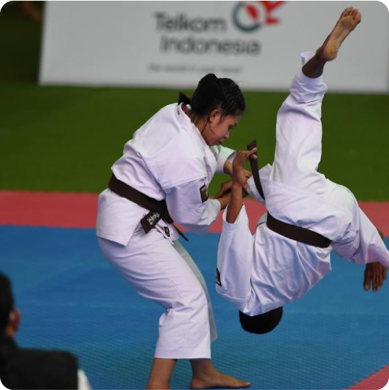

.png)
Luracafe Order Delivery
Streamline
Your Orders
With Fast And
Efficiency.
How we help Luracafe to make ordering F&B easy
and enjoyable.
This application is made for customers to be able to buy coffee or snacks online from home without having to come directly to the Luracafe shop.
In this application, customers can make payments digitally, as an additional option if they don’t want to make payments on the shop.
A Luracafe store where many customers are starting to be lazy to leave the house and sometimes don’t have time to come directly to the store and want to order delivery.
The first step we took after understanding the brief received was to make several designs such as Entity Relationship Diagrams (ERD), Sequence Diagrams and Class Diagrams.
After the design process has been carried out then enter the stage of making the program.
The first step we took after understanding the brief received was to make several designs such as Entity Relationship Diagrams (ERD), Sequence Diagrams and Class Diagrams.
After the design process has been carried out then enter the stage of making the program.
The first step we took after understanding the brief received was to make several designs such as Entity Relationship Diagrams (ERD), Sequence Diagrams and Class Diagrams.
After the design process has been carried out then enter the stage of making the program.
The first step we took after understanding the brief received was to make several designs such as Entity Relationship Diagrams (ERD), Sequence Diagrams and Class Diagrams.
After the design process has been carried out then enter the stage of making the program.
The first step we took after understanding the brief received was to make several designs such as Entity Relationship Diagrams (ERD), Sequence Diagrams and Class Diagrams.
After the design process has been carried out then enter the stage of making the program.